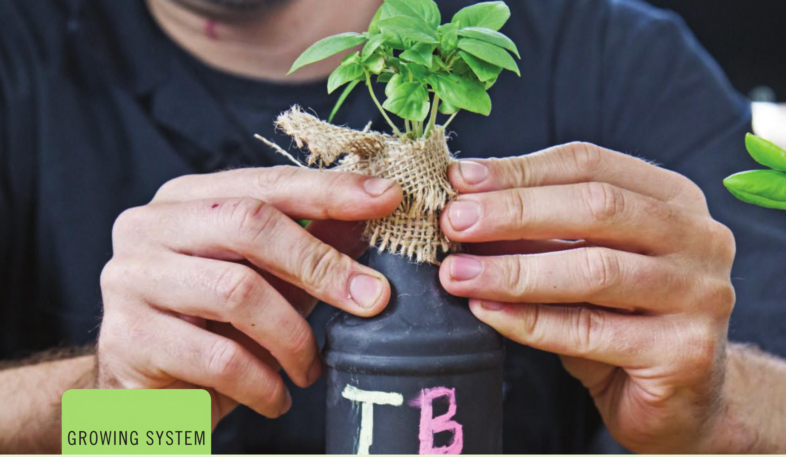

GROWING SYSTEM BOTTLE HYDROPONICS A QUICK GOOGLE SEARCH OF “bottle hydroponics” will reveal the many ways to use bottles in hydroponics. Unfortunately, most of these are either complicated, ugly, or both. These simple hydroponic bottles are easy to build, low cost, low maintenance, require no electricity, and look great. Hydroponic systems don't get much simpler than bottle hydroponics. • Suitable Locations: Indoors, outdoors, or greenhouse • Size: Small • Growing Media: Stone wool • Electrical: Not required • Crops: Leafy greens and herbs Kratky Method and Aeration The Kratky method is the easiest hydroponic growing technique. No pumps, no complex irrigation systems . . . just plants sitting in water. Most of the early hydroponic research focused on static water systems like the Kratky method. These systems worked, but, as scientists tend to do, they kept experimenting and eventually found there was an increase in plant growth rate when the nutrient solution was aerated. This discovery spurred the development of circulating hydroponic systems with increased aeration, like nutrient film technique (NFT) and top drip irrigation. 42 DIY HYDROPONIC GARDENS
